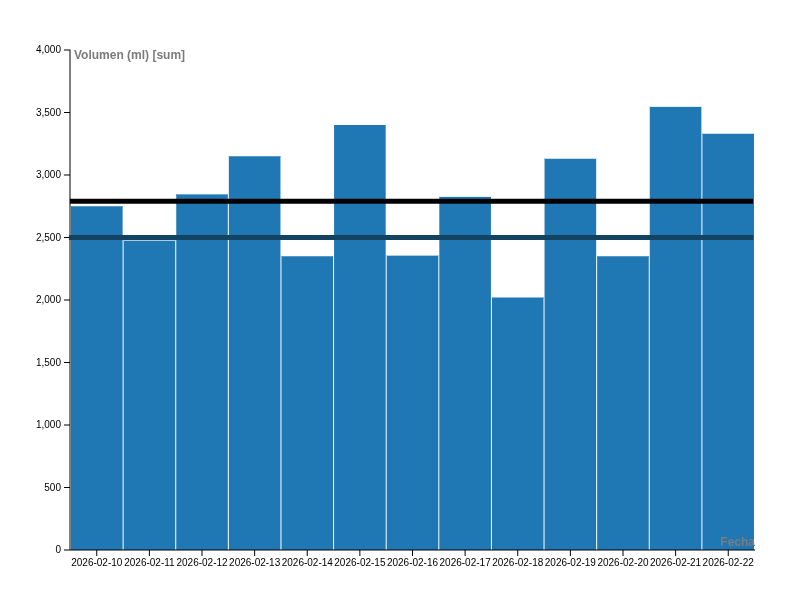

¿Alguna vez te preguntaste si realmente tomás la cantidad de agua que tu cuerpo necesita? La OMS recomienda un consumo de entre 2 y 2.5 litros diarios. Como estudiante de ingeniería, paso muchas horas frente a la computadora y mi hidratación dependía de si me acordaba de llenar el vaso o no. Por eso, decidí registrar cada mililitro de agua que tomé, anotando el volumen, la temperatura y el contexto, para descubrir mis patrones reales de hidratación.
¿Alcanzo mi meta diaria de hidratación?
Registro total diario comparado con la meta de la OMS y el promedio personal.

Leyenda:
— Línea negra: Promedio de consumo
— Línea azul oscuro: Recomendación OMS (2500ml)
¿Cómo se distribuye mi consumo según la comida?
Desglose de los momentos del día con mayor ingesta de agua.
¿Cómo se distribuye mi consumo según la temperatura?
Se tomaron la temperatura promedio y el volumen de agua consumido en cada día.